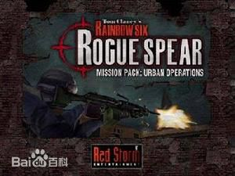

特警迷城
发行公司：UBI
开发公司：Red Storm Entertainment游戏类型：FPS
发布日期：2001年10月
对应平台： PC
汤姆克兰西的《彩虹六号雷霆战警资料片：特警迷城》（Tom Clancy's Rainbow Six Rogue Spear Mission Pack: Urban Operations）现在已经成为了游戏历史上最长的名字之一。我们第一次看到这个游戏的时候，感觉在真正的游戏中新内容的数量似乎还比不上游戏标题中单词的个数。
但是认真玩一下这个Red Storm为它深受欢迎的雷霆战警而发布的第一个资料片之后，玩家就会发现尽管这个任务包没有提供数量更多的新地图，但是它确实包含了许多种极具吸引力的游戏方式。雷霆战警真实的倾向略有几分限制了新增加武器的创造性和令人惊奇的特点。
四种武器中没有任何一种可以射出能够附在受害人咽喉上的金属球，然后流干他的血液而代之以甲醛，在爆炸之前将他变成一具行尸。而在游戏中这些武器只是在开火速度和操作特性上提供了细微的区别，这只会使铁杆雷霆战警玩家感到兴奋。
